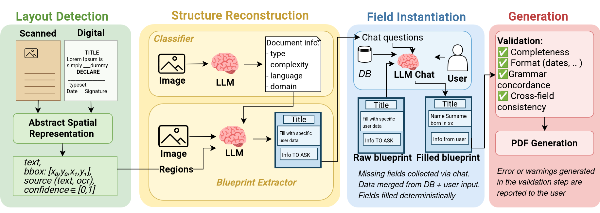
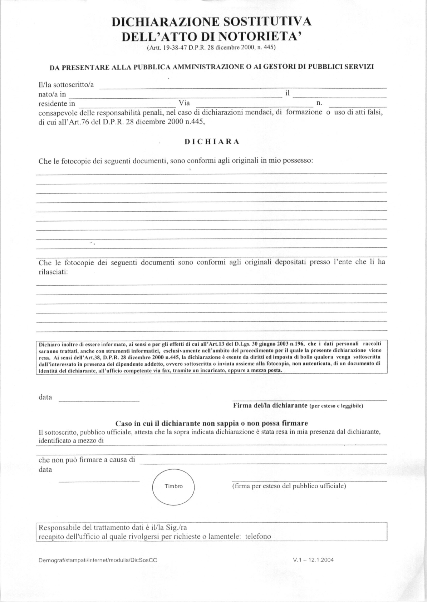
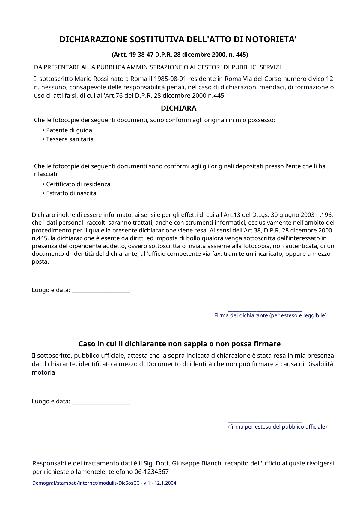
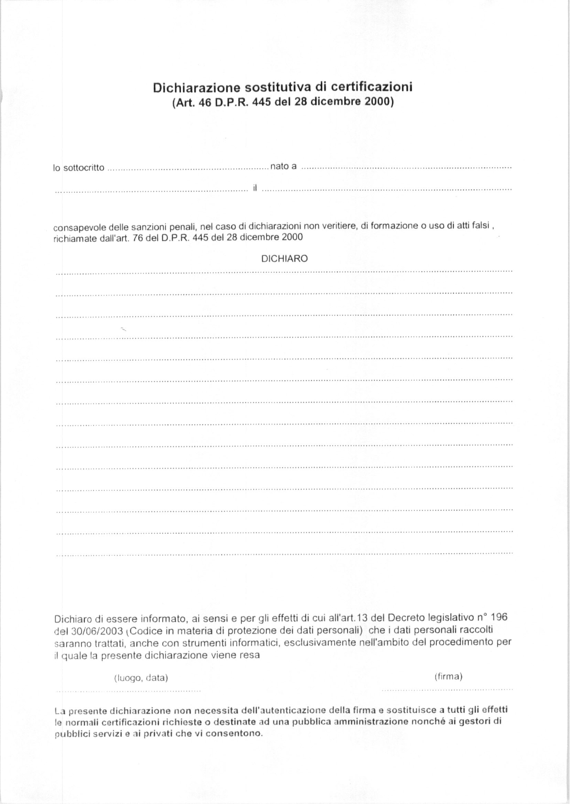
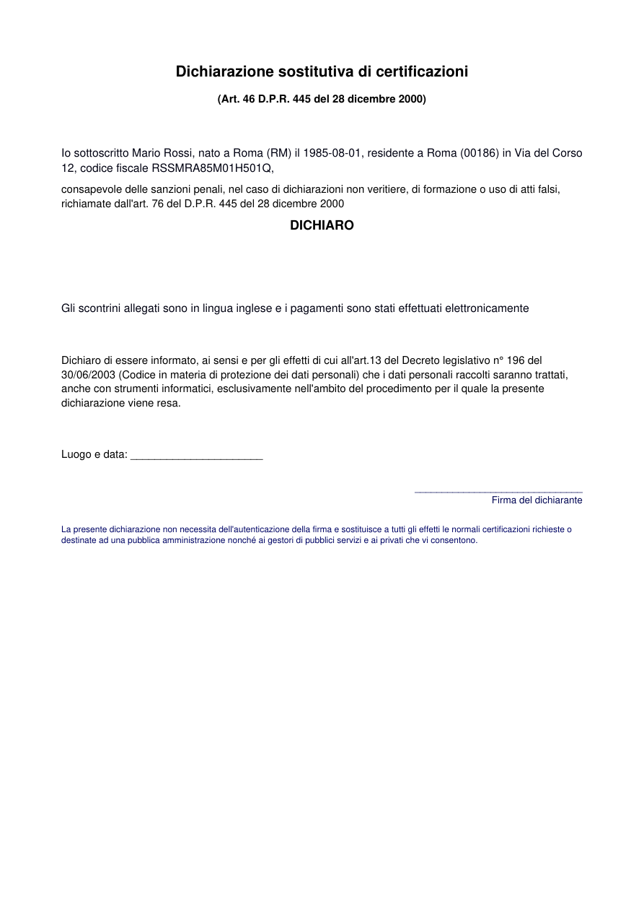
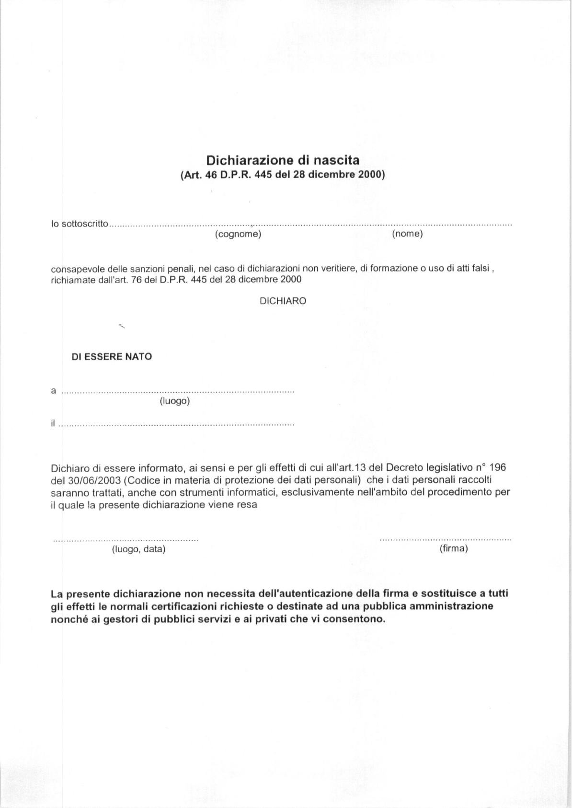
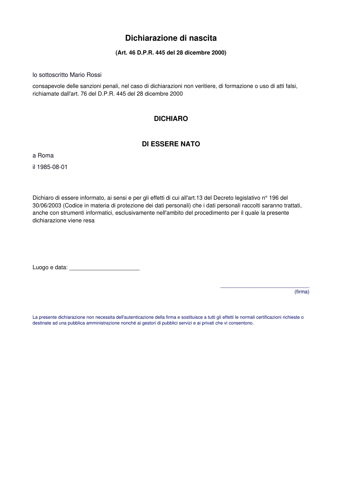

The digital transformation of Public Administration increasingly depends on the ability to automate document workflows without compromising the structural integrity, legal validity, and auditability of sensitive bureaucratic documents. Recent advances in LLM function calling have enabled agentic workflows capable of addressing key digitalization challenges in Public Administration (PA), particularly in document generation and processing. Real-world PA documents such as certificates, declarations, and contracts present significant structural complexity, combining free text with rigid formal blocks, making integrity preservation a critical requirement that LLMs alone cannot guarantee. We propose an agentic pipeline that separates structure discovery from content filling through LLM orchestration via function calling, coupled with a formal domain-specific validator that ensures structural consistency and field completeness independently of LLM variance. We evaluate our system on real-world Italian PA documents across different domains, demonstrating that the pipeline successfully resolves required fields while preserving document integrity.
Keywords: Agentic AI, Human-in-the-Loop, Public Administration

We propose a modular four-step pipeline for automated document generation from unstructured PDFs:
The system uses exclusively open-source models to guarantee zero data retention for sensitive public administration documents. Tool calling constrains the LLM to a trustable action space, while a decoupled validator drives the correction cycle with human-in-the-loop escalation when automated checks cannot guarantee a reliable outcome.
Qualitative results on real-world Italian PA forms. For each document type, the original scanned template and the generated output are shown side by side.
Sworn self-declaration under D.P.R. 445/2000 (arts. 19–38–47), used to certify that photocopies match originals. The form combines a fixed legal layout—title, personal data block, DICHIARA heading, two enumerated document lists, privacy notice, and signature lines—with variable fields such as residence details and the specific documents attached.
Original

Generated

Single-page substitute certification under Art. 46 D.P.R. 445/2000, replacing official certificates with a citizen’s sworn statement. It includes the declarant’s identity and tax code, a free-text DICHIARO clause stating the certified fact, the standard penalty warning, a privacy notice, and place/date signature fields.
Original

Generated

Birth-related self-certification under Art. 46 D.P.R. 445/2000, submitted to the municipality to declare a child’s birth details. The template mixes boilerplate legal text with structured fields for the parent’s personal data, the newborn’s name, date and place of birth, and closing signature blocks for place, date, and declarant.
Original

Generated

@misc{}